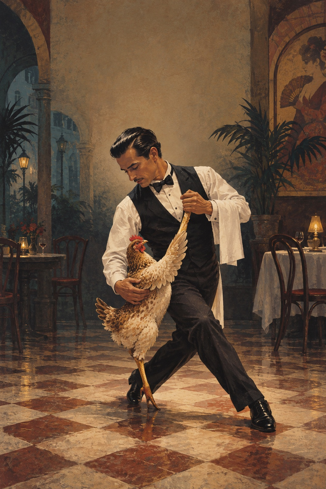

A Comic Piece
Spanish Phrasebook for the Deeply Disturbed
Originally published in 2021
Spanish Phrasebook for the Deeply Disturbed
I’m originally, and still in my soul, a New Yorker, but I’ve been living in Spain for the past fifteen years. Even after all that time, small children point and laugh at me when I speak Spanish, and adults can barely conceal their looks of pity. But there are people worse off than I, and therein lies the motive for this little talk.
I frequently see foreign visitors to Spain leafing frantically through Spanish phrasebooks, looking for the right entry to elicit the answer to commonplace questions like, “Where is the bathroom?” “When is check out time?” and, “Where is the nearest restaurant?” These questions are universal, and any commercially purchased phrasebook is enough to get you the response you need.
But I got to thinking: What if you are mentally disturbed? What if you’re delusional? What if you’re in a foreign country like Spain and you are suddenly and inexplicably compelled to stop someone on the street and exclaim:
The brain police are scanning my pineal gland.
This type of material is beyond the scope of even the most thorough phrase book!
With the growing number of mentally ill demanding vacations as part of their benefits packages nowadays, this is an idea whose time has come. After all, schizophrenics need to ask questions, too, and although the answers we give them usually fester in unmapped regions of the cortex, it would be a gross irresponsibility on the part of our foreign friends not to afford unbalanced visitors the same courtesy they would to someone whose cognitive processes aren’t scattered to the trade winds.
My phrasebook would take the traveling psychotic from airport to hotel to dinner and dancing. Let’s say, for the sake of argument, you are barking mad and have just arrived at Barajas Airport in Madrid. After waiting twenty minutes for your suitcase, you search for an appropriate entry in Peter’s Phrasebook for the Deeply Disturbed, stride boldly up to the baggage counter waving your arms and crying out:
Monos arañas han robado mi equipaje.Spider Monkeys have stolen my luggage.
Or you’re a paranoid schizophrenic. You arrive at your hotel, get the room key and make your way to your suite. You switch on the TV and immediately notice that the CIA has followed you to this god-forsaken country, trying to influence you by broadcasts picked up by small appliances. You are indignant. You whip out my phrasebook, find what you’re looking for, call the front desk and complain that:
Los rayos catódicos dirigidos desde mi televisión portátil están recableando sutilmente mis neuronas.The cathode rays emanating from the portable television are subtly rewiring my neurons.
Think of what a boon it would be for your 21st century schizoid man about town. He’s out for a late supper at a local tapas bar in Madrid. After staring into a soup tureen for twenty minutes, he looks up an entry in my phrase book, calls for the waiter and proudly announces:
Hay algo acechando en la salsa verde.There’s something lurking in the green sauce.
What if our roaming psychotic is lucky enough to find a date and wants to impress his young woman by telling the waiter how to prepare her Argentinean Churasco?
A ella le gusta la carne empalmada.She likes her meat swollen.
But more liberated ladies might want to take matters into their own hands:
A mi me gusta la carne empalmada.I like my meat swollen.
With my Spanish Phrase Book for the Deeply Disturbed, our traveler could see the same comforting looks of bewilderment and dread as he sees on the faces of his fellow English speakers.
Allow me to read you email I received. Obviously this man knew who to contact for solutions to problems such as his. It reads:
Dear Peter,
I like your blog. I especially applaud your assertion that aliens live among us, so I believe you are the right person to ask advice on this delicate matter. I was traveling in Havana and eating at a little restaurante that served a black bean dish with gorgeous little Cornish hens as big as my fist. I had just tucked into one of the beauties when it jumped off the plate and began to dance with one of the lithe Cuban busboys.
Its seductive gyrations directed toward the Hispanic youngster naturally enraged me, but my Oxford Spanish Phrasebook was sorely lacking in its ability to translate my jealousy into Spanish.
I went back to my hotel room with a sense of loss and grief that I hadn’t felt since my sister’s Christmas goose slid off the plate and tongue kissed my Cocker Spaniel. What should I have said to alleviate my suffering?
Signed,
White Meat Wilbur
Sheesh! Everybody knows that chickens can’t gyrate. My suspicion is that this man is deranged. Their dancing is limited to bobbing up and down. But any marketing executive will agree that he forms part of the target group for my phrasebook.
So, my depraved friend, when you are faced with potentially unfaithful water or land fowl, the phrase is:
¡Si me pones los cuernos otra vez esta noche, te lo juro que te voy a matar!If you cheat on me again tonight, I swear I’ll kill you!
I’m sure you will agree, Peter’s Spanish Phrasebook for the Deeply Disturbed is a welcome addition to any mentally disordered person’s shaving kit, and costs less than any other phrasebook on the market. Get one today and enter the ranks of the 21st century Schizoid Man.
The End
Thank you for reading
Pages 1–2 of 10
Use the arrow keys or swipe to turn pages